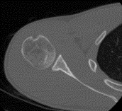
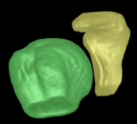
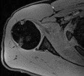
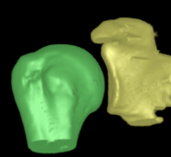
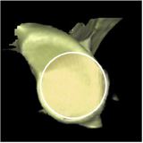

Measurement of Glenoid Bone Loss With 3-Dimensional Magnetic Resonance Imaging: A Matched Computed Tomography Analysis
Measurement of glenoid bone surface area (GBSA) and glenoid bone loss (GBL) between CT and MRI of patients with recurrent shoulder instability.
A deep-learning (DL) scheme for automated segmentation of shoulder joint structure in MRI.





Vopat, B.G., Cai, W., Torriani, M., Vopat, M.L., Hemma, M., Harris, G.J., Schantz, K. and Provencher, M.T., 2018. Measurement of glenoid bone loss with 3-dimensional magnetic resonance imaging: a matched computed tomography analysis. Arthroscopy: The Journal of Arthroscopic & Related Surgery, 34(12), pp.3141-3147.
Liu et al. Journal of Image and Graphics 2018
Seeking the Optimal Isometric Locations for the Ulnar Collateral Ligament Attachment in Elbow Surgery
This project is a collaboration between two groups at Massachusetts General Hospital (MGH): 3D Quantitative Imaging Lab, and Sports Medicine Center. We endeavor to address a challenge in orthopedic surgery for baseball athletes, where the surgical reattachment location of a torn Ulnar Collateral Ligament (UCL) has to be different from the natural attachment site and ideally, should be isometric with regard to elbow movement. We are developing a gamified software ElbowCare, enabled by the Unreal Engine, that can numerically search for the optimal ligament reattachment locations. ElbowCare serves primarily as an education software, and will be helping both orthopaedic surgeons and trainees.
This project received the 2021 Thrall Innovation award, Radiology department, Massachusetts General Hospital.